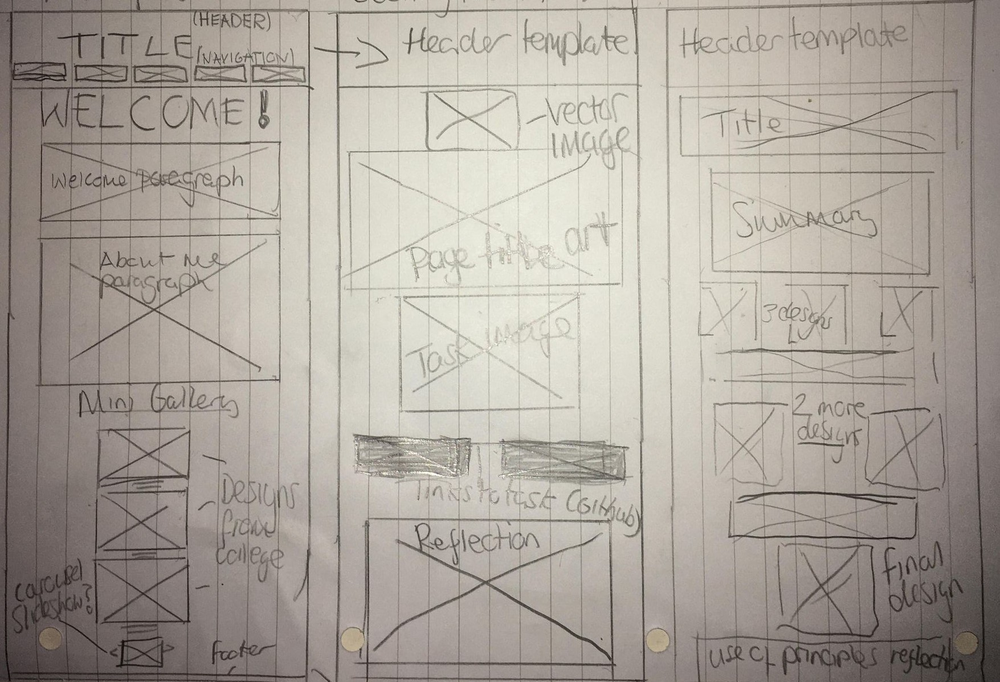
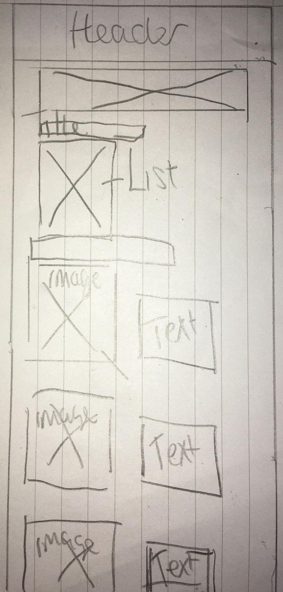
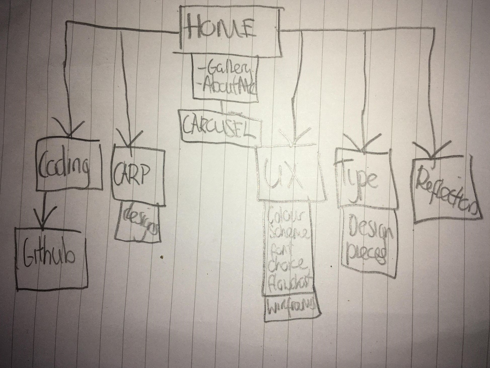

User Experience.
Strategy and scope.
My website has several aims. Firstly, to summarise myself as a designer. Secondly, to
showcase my learning in the module and finally, to present my design style with my
colour/ font/ layout choices. My target users are the module tutors, I aim that
this site will give a good view on me as a designer and my abilities.
The content
included is the listed assignment tasks with appropriate design choices to accompany them
and make the look of the pages fit for purpose. I've also included an about me section and
a mini gallery of my design pieces to further fulfil my aim. My functional goals for my
site are to have a carousel image viewer and embedded links to my github.
Colour scheme & font choices

When thinking about user experience, it is important to consider how the fonts/ colour scheme
can impact this. Firstly, you do not want too many different colours/ fonts as this can visually
clash. Secondly, you want to think about how font/ colour choices can give the user a good experience
with your site. I have chosen a different colour scheme for each page, choosing colours which I think best represent the theme, thinking about connotations.
Omnes - I chose this font for general usage throughout the page. It is good to have a clear,
tidy font to use in contrast with stylised fonts.
Blow up -
I chose this font for the welcome section of my website. I did this because I wanted to pick a fun
font that represents my taste in design. Also, I wanted to welcome the user to the site with a lighthearted
typeface style because the site is not meant to have a formal/ serious feel.
Lores - I selected this font for my coding page. I did this because I wanted
to include a font that connotes computers and technology. This is to make the design fit for purpose
and more exciting.
Some basic fonts were included too. I've included Arial for the title of this page as I feel this is the most formal
page so a formal font was due. Also, on the typography page I included times new roman because
it is a classic typeface.
Flow chart/ wireframes
- It is also important to consider user experience with navigation and layout,
so it is neccessary to plan this with wireframes/ flowcharts.


These sketches outline the basic layout of the page,
showing where the images/ text will be placed. They are a useful tool for aiding
the design process. To improve, I would do this in photoshop for a tidier look but I
was very keen to get started with the website design in this instance.

This diagram presents the layout of the page navigation.
As there was only one page with external links, this was a very basic flow chart to
produce. I've also added notes about page contents to it. Similarly to the wireframes,
to improve I would produce this in Photoshop to give a tidier look. In future I will focus
on planning more rather than jumping straight into web design.
Reflection on task.
This task was useful for thinking about the effect of design. It is important to put yourself
in your users shoes and think about how design choices can impact the feel/ professionalism of your design.
I feel I considered font/ colour choices and their effect to a good standard that really supported
my website design. However, I feel I could of put more effort into the planning (wireframes/ flowcharts).
As mentioned earlier, in future I will design things of this nature in photoshop.